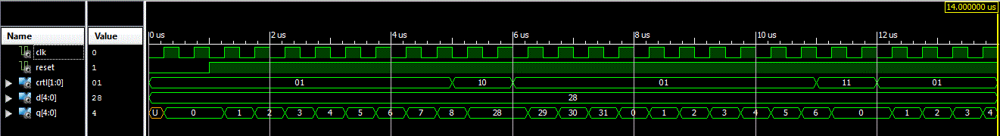
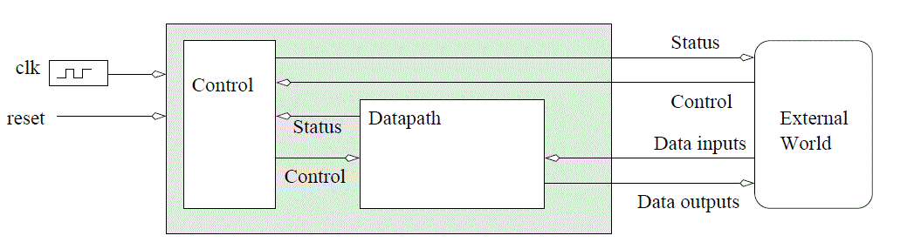
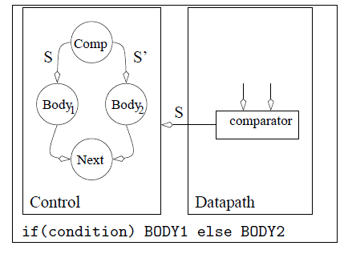
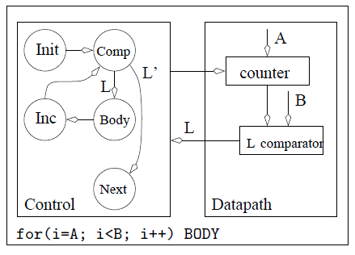
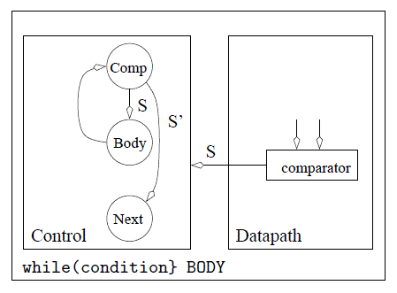
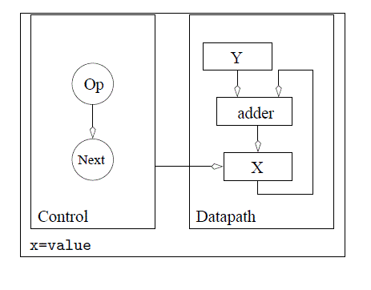
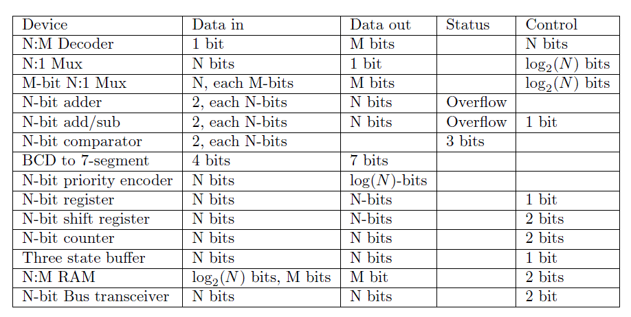

There are times when you will want to parameterize your designs. A good example is
the bus width of a component like a counter. Instead of having multiple VHDL sources
files for a 5-bit-counter, 16-bit-counter, it would be far easier to have a single
definition for an N-bit-counter and specify N somehow when you went to instantiate
the counter. Fortunatly, generics give us this capability. The files linked above
are a N-bit counter and its testbench. This example should give you a pretty good
idea of how to instantiate them.
Entity Declaration
entity lec10 is
generic (N: integer := 4);
port( clk: in STD_LOGIC;
reset : in STD_LOGIC;
crtl: in std_logic_vector(1 downto 0);
D: in unsigned (N-1 downto 0);
Q: out unsigned (N-1 downto 0));
end lec10;
Note:
The variable N is available in the entity and architecture context.
In this case, you will need it to define the width of vectors.
The value of N must be an integer, not a binary string. Just use
positive integers for N.
The default calue for N is 4. That means, if you do not use the
generic map statement in the instantation
below, you will get a 4-bit counter.
The D and Q vectors use N-1 because the vector starts at 0.
In this case, I made a 5-bit counter. The testbench linked above runs the counter
through all four control modes and even shows how it rolls over (around 7.5uS).

Datapath and Control
The datapath and control design methodology break the design of digital
systems into two components: a datapath and a control unit. The datapath
is responsible for all the data manipulations and the control unit is
responsible for sequencing the actions of the datapath. The datapath is
constructed from the basic building blocks.
A digital system built using the datapath and control design approach is
still a digital system whose inputs and outputs can be categorized into
Data input, Data output, Control and Status. The digital system shown
below consists of two components, a datapath and a control unit.

Fig 10.0 - An abstract digital system constructed from a datapath and a
control unit.
The datapath can perform a variety of data transformations. The control
unit instructs the datapath which transformation to perform using a set
of control signals called the control word. An often overlooked portion of
the control word are signals provided by the external world such as the
acknowledge signal in a two-line handshake. The datapath provides status
information
Design Process
Building digital systems using the datapath and control approach is a three-
step process.
Write an algorithmic description for the solution to the problem.
Parse the algorithmic description into datapath building blocks and
control states.
Define the MIEs and OEs for the control unit.
The algorithmic descriptions are written in a simple programming language.
The algorithmic description is then transformed into hardware by
parsing the algorithm one line at a time. Each statement in the algorithm
introduces additional building blocks in the datapath and additional states
in the control unit. After the algorithm is finished being parsed, the design
is completed by deriving the MIEs and OEs of the FSM.
The programming language used to formalize an algorithmic solution to
design problem is a derivative of the popular C-programming language
referred to as mini-C. The mini-C programming language contains four types
of statements.
IF
if (condition) then BODY_1 else BODY_2
FOR
for (i=A; i
WHILE
while(condition) BODY
ASSIGNMENT
X = value
The term BODY is a place holder for 0 or more statements. In this
way, statements can be nested. For example, the body of a for loop may
contain a for loop, the body of which may contain a while loop, etc... In
addition to statements, the mini-C language also requires variables to hold
the state of the program.
In digital circuit design, the variable types in the mini-C language are
limited to be either binary or 2's-complement integers. Arrays of these types
are common. Limiting the discussion to integer types is not an inherent limitation
of the mini-C language, rather it limits the discussion to the essential
points of the design process. Complex types like floating-point numbers can
be accommodated if the necessary representations and hardware are
developed.
No effort is made to explain the process of transforming a word statement
into an algorithm; the process should be a familiar task from writing
programs. Rather, consideration of the transformation of the algorithm into
hardware is presented.
From an algorithmic statement, its conversion into hardware is desired. The
conversion is accomplished by parsing the algorithm. In computer science,
parsing is the process of analyzing a program for its structure. Here, parsing
means analyzing a program line-by-line, sequentially, from the first line to
the last line, to determine its hardware structure. The analysis process takes
a line of code, a mini-C statement, and transforms it into some additional
building blocks in the datapath and some additional states in the control
unit. When the parsing is complete, the datapath has all the functionality
present in the algorithm, and the control unit has all the control structures
present in the algorithm.
IF
When an if/then/else statement is encountered in a program, BODY_1
is executed when the condition is true. If condition is false, then
BODY_2 is executed. BODY_1 and BODY_2 contain 0 or more statements.
Typically, the datapath computes the condition using a comparator.
In such a case, the datapath requires a comparator, the output of
which is the status signal shown in Figure 10.1.
While the control unit is in state IfThen, the condition is being evaluated,
the status signal is being communicated to the control unit,
and the control unit is deciding whether to transition to either the
BODY1 or BODY2 states. When the clock edge arrives, the control
unit will transition to its next state. The BODY1 or BODY2 states
contain the entire collection of states derived by parsing all the statements
in their respective bodies. Regardless of which path the control
unit takes, both threads return to the Next state, which is the next
statement after the if/then/else statement in the algorithm.

Fig 10.1 - The datapath and control components required to realize an
if/then/else structure.
FOR
When a for loop is encountered in a program, BODY is executed B-A
times and the value of i is available for use inside BODY. BODY contains
zero or more statements. A for statement requires a counter and a
comparator arranged as shown in Figure 10.2. The initial value of the
for loop is the data input to the counter. The output of the counter
is the i variable of the for loop. The i variable is compared to the
terminal value of the for loop. The status of this comparison is passed
to the control unit so that the control unit knows to terminate the for
loop when the counter has reached its terminal value.
The control unit sequences the actions of the hardware in the datapath.
The execution of the for loop begins with an initialization of
the counter in the Init state. In this state, the control unit asserts
a load signal on the control lines to the counter causing the counter
to be initialized to A. On the next clock edge, the counter loads A
and the control unit transitions to the Comp state. In this state, the
control unit does nothing, giving the comparator time to determine
the relative magnitude of i and B, and to assert its L output to the
control unit in the form of a status signal. The control unit uses the
status signal to either execute the body of the for loop, or to exit
the for loop and proceed with the next instruction after the for loop.
The Body state represents the collection of states derived by parsing
all the statements in the body of the for loop. At the end of the for
loop's body, the control unit enters the Inc state where the control
unit asserts an increment signal on the control lines to the counter.
This assertion causes the counter to count up on the next edge which
also causes the control unit to transition back to the Comp state.

Fig 10.2 - The datapath and control components required
to realize a for loop.
WHILE
When a while loop is encountered in a program, Body is executed while
the condition is true. Typically, the datapath computes the condition
using a comparator, the output of which is the status signal shown in
Figure 10.3. While the control unit is in state Comp, the condition is
being evaluated, the status signal is being communicated to the control
unit, and the control unit deciding on whether to transition to either
the Body or Next states. The Body state represents the collection
of states derived by parsing all the statements in the body of the while
loop.
In some cases the status signal may be determined by some external
source. Then, the status line shown in Figure 10.3 as emanating from
the datapath would in fact be sent in from the external world as shown
in Figure 10.3.

Fig 10.3 - The datapath and control components required
to realize a while statement.
ASSIGNMENT
When an assignment statement is encountered in a program, X is assigned
a new value. This statement is realized by placing a register
in the datapath whose input is the value on the right-hand side of the
assignment statement. In order to make the assignment, the control
unit enters the Op state, where it asserts a load signal on the registers
control input. On the next positive edge of the clock, the register loads
its value and the control unit moves on to the Next state.
The size of the register storing X is determined by the range of values
required to be stored in X. In some cases, this size is defined by the
word statement; in other cases, the designer must make a judgment
call on a reasonable value range.
Statements like X = X+Y often occur in algorithms. In cases when
a variable appears on both the left-hand and right-hand side of an
assignment statement, feedback must be employed as shown in Figure 10.5.
In this case, the output from the X register is added to Y, the
output of the summation is sent to the data input of the X register.
The control unit asserts a load signal on the X register's control input
when it is in the Op state. Most likely, the control unit would assert
a hold signal on the Y register's control input while it was in the Op
state.
What prevents the X register from rapidly adding Y to itself multiple
times? The answer is that the X register will only latch X+Y on the
positive edge of the clock. So X+Y cannot "get into" the X register
until the positive clock edge.

Fig 10.5 - The datapath and control components required
to realize an assignment statement of the form X+Y.
A variable often appears on the left-hand side (LHS) of two or more assignment
statements. For example, consider a algorithmic description
which contains the statements X=Y and X=Z. In this case, the variable
X appears on the LHS of two assignments. Since the variable X is
stored in a register which has a single input, a problem occurs because
there are two different sources for the input. This conflict is resolved
by inserting a mux between the two data sources and the single data
input of the X register as shown in Figure 10.5. The control unit aids in
resolving this conflict by asserting control1 to route the correct value
to the data input of register X when the control unit asserts a load
signal on the control2 line.
Basic Building Blocks

Table 10.6 - The list of all the basic building blocks and
some of their attributes.